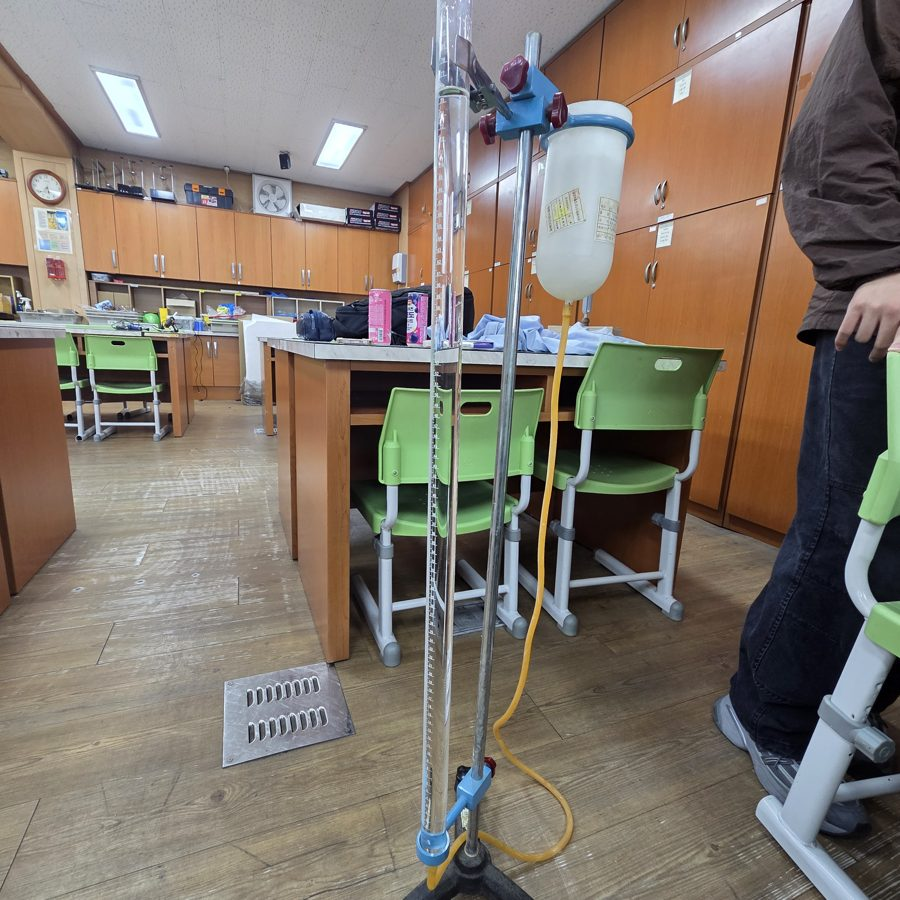
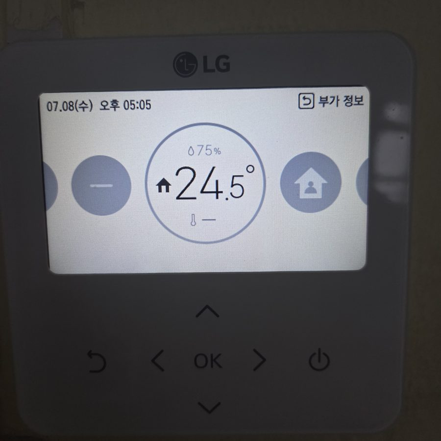

이번 호, 두 개의 심화 탐구
철수세미 동아리의 탐구를 초등학생·중학생도 읽을 수 있게 풀어 쓴 온라인 잡지예요. 표지를 누르면 열려요.
철수세미 동아리의 탐구를 초등학생·중학생도 읽을 수 있게 풀어 쓴 온라인 잡지예요. 표지를 누르면 열려요.
소리와 술래잡기하는 법
도망치면, 소리는 다르게 들린다. 주파수 분석으로 관찰한 도플러 효과
술래가 쫓아오면 우리는 도망가요. 가만히 서 있으면 금방 잡히고, 도망치면 잡히기까지 시간이 더 걸려요.
그런데 만약 내가 술래와 똑같은 속력으로 도망친다면? 술래는 절대 나를 따라잡을 수 없어요. 직접 해 볼까요?
너무 당연한 이야기죠? 그런데 이 당연한 이야기가 소리에도 그대로 적용돼요.
스피커에서 소리가 나면, 스피커가 공기를 앞뒤로 떨게 만들어요. 이 떨림은 연못에 돌을 던졌을 때 생기는 물결처럼 사방으로 퍼져요. 물결의 마루 하나하나를 파면이라고 불러요.
소리가 1초에 몇 번 떨리는지를 진동수라고 하고, 단위는 Hz(헤르츠)예요. 1초에 800번 떨리면 800 Hz예요. 진동수가 크면 높은 소리, 작으면 낮은 소리로 들려요.
소리는 공기 중에서 1초에 약 346 m를 달려요. 우리 실험실 온도인 24.5 ℃ 기준이에요. 소리는 따뜻할수록 조금 더 빨라져요.
800 Hz 소리를 술래 800명이라고 생각해 봐요. 1초 동안 800명이 차례차례 출발해서, 1초에 346 m씩 나를 향해 달려와요. 술래에게 한 번 잡힐 때마다 내 귀는 파면을 하나 느껴요.
반대로 술래 쪽으로 달려가면 더 자주 잡히니까 높은 소리로 들려요. 구급차가 다가올 때 "삐뽀"가 높다가 지나가면 낮아지는 것도 같은 이유예요.
이렇게 소리를 내는 쪽과 듣는 쪽이 서로 움직일 때 들리는 진동수가 달라지는 현상을 도플러 효과라고 해요. 오스트리아의 과학자 크리스티안 도플러의 이름을 딴 거예요.
소리를 내는 쪽은 가만히 있고, 듣는 쪽이 멀어질 때:
들리는 진동수 = 원래 진동수 × (소리 속력 − 내 속력) ÷ 소리 속력
800 × (346.2 − 1) ÷ 346.2 ≈ 797.7 Hz
1초 동안 나를 잡을 수 있는 술래는 (346.2 − 1) m 안에 있던 술래뿐이라는 뜻이에요. 소리 속력은 온도 T(℃)에서 331.5 + 0.6T (m/s)로 구해요.
정말 그런지 직접 확인하고 싶었어요. 처음 쓴 도구는 기주공명장치예요. 긴 관 속 물 높이를 바꾸면서 소리가 가장 크게 울리는 높이를 찾는 장치인데, 그 높이로 소리의 파장을 알 수 있어요.

"스피커를 들고 움직이면 울리는 높이가 바뀌겠지?" 하고 해 봤지만, 아무리 해도 변화가 보이지 않았어요. 계산해 보니 1 m/s로 움직일 때 소리는 겨우 0.3%만 바뀌어요. 울리는 높이로 따지면 1 mm 안팎이에요.
그래서 방법을 바꿨어요. 소리를 녹음해서 컴퓨터로 주파수 분석을 하기로요.

주파수 분석은 녹음된 소리 안에 어떤 높이의 소리가 얼마나 들어 있는지 보여 주는 그래프예요. 소리의 성분표라고 생각하면 돼요.
분명히 800 Hz를 틀었는데 분석 프로그램은 806 Hz라고 알려 줬어요. 1000 Hz는 1002 Hz, 1200 Hz는 1198 Hz였고요. 처음에는 "방의 벽 때문에 소리가 바뀌었나?" 하고 생각했어요.
이번 잡지를 만들면서 원본 녹음을 훨씬 정밀하게 다시 분석해 보니, 진짜 소리는 800.01, 1000.02, 1200.03 Hz였어요. 문제는 분석 도구의 눈금이었어요.
1 cm 눈금밖에 없는 자로는 1 mm를 잴 수 없죠. 우리가 쓴 설정은 소리를 약 47 Hz 간격의 칸으로 나눠 봤는데, 찾으려던 변화는 겨우 2~7 Hz였어요.
멀어지면서 녹음한 30개 중 29개에서 소리가 원래보다 낮아졌어요. 빨리 걸을수록 더 많이 낮아졌고요. 도플러 효과는 진짜였어요!
그런데 낮아진 정도는 모두 이론값보다 조금 작았어요. 이론값은 "정확히 1 m/s, 2 m/s로 처음부터 끝까지 똑같이 걸었다"고 가정한 값이에요. 하지만 우리는 출발할 때 천천히 속도를 올리고, 도착하기 전에는 속도를 줄였어요.
그래서 거꾸로 생각해 봤어요. 소리가 낮아진 정도로 우리가 실제로 얼마나 빨리 걸었는지 알아낼 수 있지 않을까?
| 소리 | 목표 속력 | 소리로 계산한 속력 |
|---|---|---|
| 800 Hz | 1 m/s | 0.68 m/s |
| 800 Hz | 2 m/s | 1.00 m/s |
| 1000 Hz | 1 m/s | 0.37 m/s |
| 1000 Hz | 2 m/s | 0.70 m/s |
| 1200 Hz | 1 m/s | 0.76 m/s |
| 1200 Hz | 2 m/s | 1.36 m/s |
계산해 보니 실제 평균 속력은 초속 0.4~1.4 m였어요. 사람이 실내에서 걷는 속도와 비슷하죠. 그리고 세 소리 모두 빨리 걸었을 때가 천천히 걸었을 때보다 1.5~1.9배 더 많이 낮아졌어요. 빨리 움직일수록 도플러 효과가 커진다는 걸 직접 확인한 거예요.
이렇게 소리나 전파가 바뀐 정도로 속력을 재는 방법은 실제로 쓰이고 있어요. 경찰이 차의 속도를 재는 스피드건, 야구에서 공의 속도를 재는 장치, 비구름의 움직임을 살피는 기상 레이더가 모두 도플러 효과를 이용해요. 우리는 스마트폰 두 대로 작은 스피드건을 만든 셈이에요.
1200 Hz 녹음 몇 개에서 원래보다 높은 1204~1206 Hz 소리가 함께 잡혔어요. 멀어지는데 왜 높아졌을까요? 답은 앞쪽 벽이에요.
벽에서 튕겨 나온 소리는 앞에서 나를 향해 와요. 나는 그 소리 쪽으로 걸어가고 있었으니 더 자주 잡히는 거예요. 이론값은 2 m/s에서 1206.9 Hz, 1 m/s에서 1203.5 Hz인데, 실제로 1204~1206 Hz와 1203.1 Hz가 잡혔어요. 낮아지지 않았던 1개가 바로 이 반사음이 더 크게 녹음된 경우였어요.
빛도 파동이라서 같은 일이 일어나요. 빛은 진동수가 낮아지면 빨간색 쪽으로, 높아지면 파란색 쪽으로 바뀌어 보여요.
멀리 있는 은하들의 빛은 대부분 빨간색 쪽으로 밀려 있어요. 이것을 적색편이라고 하고, 우주가 팽창하고 있다는 중요한 증거가 되었어요.
소리는 공기라는 길을 따라 달리지만, 빛은 아무것도 없는 우주에서도 달려요. 그래서 빛의 도플러 효과에는 아인슈타인의 상대성 이론이 들어간 다른 공식을 써요.
실패했다고 끝이 아니에요. 기주공명장치로는 변화가 안 보였지만, 왜 안 보일까를 계산해 보고 방법을 바꿀 수 있었어요.
도구의 눈금을 확인해야 해요. 806 Hz를 처음엔 그대로 믿었지만, 사실은 눈금이 굵어서 생긴 숫자였어요. "이 도구로 내가 찾는 차이를 구별할 수 있나?"를 먼저 물어봐야 해요.
오늘 집에 가는 길에 지나가는 차 소리에 귀 기울여 보세요. 소리가 여러분과 술래잡기를 하고 있을지도 몰라요.
원 보고서: 「주파수 분석을 통한 도플러 효과 관찰」 · 재분석: 원본 녹음 33개 정밀 주파수 분석
눈을 감고 산을 내려가는 법
경사를 따라 한 걸음씩, 경사 하강법 이야기
아래 점 117개는 1905년부터 2021년까지 우리나라가 1년 동안 내뿜은 이산화탄소의 양이에요. 1950년에는 약 2백만 톤이었는데, 2018년에는 약 6억 7천만 톤이 되었어요.
미래를 짐작하는 가장 간단한 방법은 점들을 가장 잘 따라가는 직선 하나를 긋는 거예요. 이걸 선형 회귀라고 해요. 직접 그어 볼까요?
수업에서는 이 직선을 컴퓨터 명령어 한 줄(LinearRegression)로 바로 구했어요. 그런데 궁금해졌어요. 컴퓨터는 어떻게 가장 잘 맞는 직선을 찾을까?
각 점에서 직선까지 위아래로 떨어진 거리를 재고, 그 거리를 제곱해서 평균을 내요. 제곱하는 이유는 위로 빗나간 것과 아래로 빗나간 것이 서로 지워지지 않게 하고, 크게 빗나간 점에 더 큰 벌점을 주기 위해서예요.
이 점수를 평균 제곱 오차(MSE)라고 해요. 여기서는 오차 점수라고 부를게요. 위 게임에서 "오차를 사각형으로 보기"를 켜 보세요. 사각형 넓이의 평균이 바로 오차 점수예요.
직선은 기울기(m)와 절편(b) 두 숫자로 정해져요. m과 b를 바꿀 때마다 오차 점수도 바뀌어요.
m과 b를 지도 위의 위치로, 그 위치의 오차 점수를 땅의 높이로 생각해 봐요. 그러면 가장 잘 맞는 직선 찾기는 이 지형에서 가장 낮은 골짜기 바닥 찾기가 돼요.
컴퓨터는 이 지형을 한눈에 볼 수 없어요. 짙은 안개 낀 산 위에 눈을 감고 서 있는 것과 같아요. 이럴 땐 발밑의 경사를 느껴서 내리막 쪽으로 한 걸음씩 내려가면 돼요. 더 이상 내리막이 없으면 거기가 바닥이에요.
지도에는 방향이 두 개(m, b) 있으니까 한 방향씩 따로 경사를 재요. 이걸 수학에서는 편미분이라고 해요. 먼저 m 한 방향만 바꾸면서 안개 속을 직접 내려가 보세요.
방금 여러분이 한 일, 경사를 보고 내리막으로 한 걸음씩 가는 것을 컴퓨터가 자동으로 하면 그게 경사 하강법이에요.
새 m = 지금 m − 보폭 × (m 방향 기울기)
새 b = 지금 b − 보폭 × (b 방향 기울기)
기울기는 오르막 방향을 알려 주니까, 빼야 내려가요. 우리 탐구에서는 Python의 sympy로 오차 점수를 m과 b에 대해 편미분하고, 이 계산을 1000번 반복했어요.
한 걸음을 얼마나 크게 내딛느냐를 학습률이라고 해요. 여기서는 보폭이라고 부를게요. 너무 작으면 하루 종일 걸리고, 크면 바닥을 지나쳐 반대편 벽으로 넘어가요.
우리는 보폭 7가지로 각각 1000걸음씩 걸어 봤어요. 0.1이 가장 빨랐고, 0.0001은 1000걸음 뒤에도 산 중턱이었어요.
우리가 시험한 보폭 중에는 튕겨 나간 경우가 없었어요. 계산해 보니 이 지형에서는 보폭이 약 0.79를 넘으면 골짜기 양쪽 벽을 오가며 점점 높이 올라가 버려요. 그보다 작은 보폭으로 진짜 골짜기에서 직접 굴려 보세요.
계산 전에 연도(1905~2021)를 0~1 사이 숫자로 바꿨어요. 1905년은 0, 2021년은 1이에요. 이걸 정규화라고 해요.
연도를 그대로 쓰면 지형이 엄청나게 좁고 긴 협곡이 돼요. 그러면 보폭을 0.00000026보다 작게 해야 겨우 안 튕겨 나가는데, 그렇게 작은 보폭으로는 영원히 바닥에 못 가요.
보폭별 비교에서 "m과 b" 그래프를 보면, b가 처음에 올라갔다가 다시 내려와요. 정답 b는 −170인데 말이에요.
이 골짜기는 비스듬히 기울어진 긴 타원 모양이에요. 공은 먼저 가장 가파른 쪽으로 굴러가는데, 그 방향이 마침 b가 커지는 쪽이었어요. 바닥에 닿은 뒤에는 바닥을 따라 정답 쪽으로 천천히 움직이면서 b가 다시 줄어든 거예요. 「진짜 골짜기에서 굴려 보기」에서 보폭 0.1로 굴려 보면 공이 골짜기 벽을 따라 돌아 내려가는 길이 보여요.
| 경사 하강법 | LinearRegression | |
|---|---|---|
| 기울기 m | 664.33869 | 664.33952 |
| 절편 b | −170.39212 | −170.39257 |
| 오차 점수 | 12533.334131547 | 12533.334131487 |
경사 하강법: 보폭 0.1, 1000걸음
두 오차 점수의 차이는 0.00000006이에요. 눈을 감고 내려갔는데 거의 정확히 바닥에 도착했어요.
처음에는 경사 하강법이 더 좋게 나오지 않을까 기대했어요. 하지만 LinearRegression은 공식으로 정확한 바닥 위치를 바로 계산하니까, 경사 하강법은 거기에 가까워질 수는 있어도 더 낮아질 수는 없어요.
직선 하나를 찾는 문제에서는 공식이 더 빠르고 정확해요. 하지만 사진을 알아보거나 대화하는 인공지능은 m, b 같은 숫자가 수백만 개, 수십억 개예요. 그런 거대한 지형에서는 바닥을 공식으로 바로 계산하기가 사실상 불가능해요.
그래서 오늘날의 인공지능은 대부분 경사 하강법과 그것을 개량한 방법으로 학습해요. 눈을 감고 한 걸음씩 내려가는 단순한 방법이 인공지능을 가르치는 핵심이에요.
1930년대 중반까지 직선은 0보다 작은, 있을 수 없는 배출량을 가리켜요. 2018년 이후 실제 배출량은 줄었는데 직선은 계속 올라가요. 경사 하강법은 직선 중에서 가장 좋은 걸 찾아 줄 뿐, 직선이 이 데이터에 맞는 모양인지는 알려 주지 않아요. 그건 여전히 사람이 생각할 몫이에요.
명령어 한 줄 뒤에 숨어 있던 원리는 생각보다 단순했어요. 잘 맞는 정도를 점수로 만들고, 그 점수를 지형으로 보고, 경사를 따라 한 걸음씩 내려가기.
골짜기에서 보폭을 너무 크게 했다가 공이 날아가 버리는 모습을 보면, 인공지능을 가르치는 사람들이 왜 보폭 하나에 신경 쓰는지 알게 될 거예요.
원 보고서: 「경사 하강법을 이용한 선형 회귀 구현」 · 데이터: Global Carbon Budget 2022 (GCB2022v27)